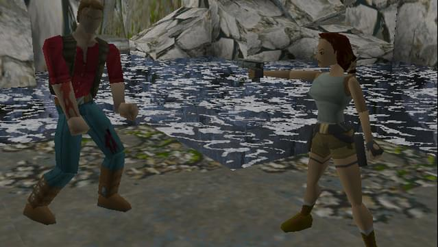

Tomb Raider

Tomb Raider es un videojuego de aventura de acción y plataformas, uno de los primeros en 3D aparecidos para la generación de 32 bits, desarrollado por Core Design y distribuido por Eidos Interactive. Es el primer juego de la serie Tomb Raider y narra las aventuras de Lara Croft, una arqueóloga británica en busca de tesoros y reliquias del mundo antiguo al más puro estilo de Indiana Jones. Tomb Raider salió a la venta en noviembre de 1996 para Sega Saturn, y fue adaptado poco después para PC CD-ROM y PlayStation. En Tomb Raider, el jugador controla a la arqueóloga Lara Croft en su búsqueda por el mundo de los tres misteriosos artefactos de Scion. El juego se presenta en perspectiva de tercera persona. Lara siempre está visible y la cámara sigue su acción desde atrás o sobre su hombro. El mundo que ella habita es totalmente dibujado en tres dimensiones y caracterizado por su naturaleza cúbica. Las repisas, paredes y techos se sitúan 90 grados al uno respecto al otro (aunque los diseñadores usaron algunos trucos para hacer esto menos obvio).
COMPRAR